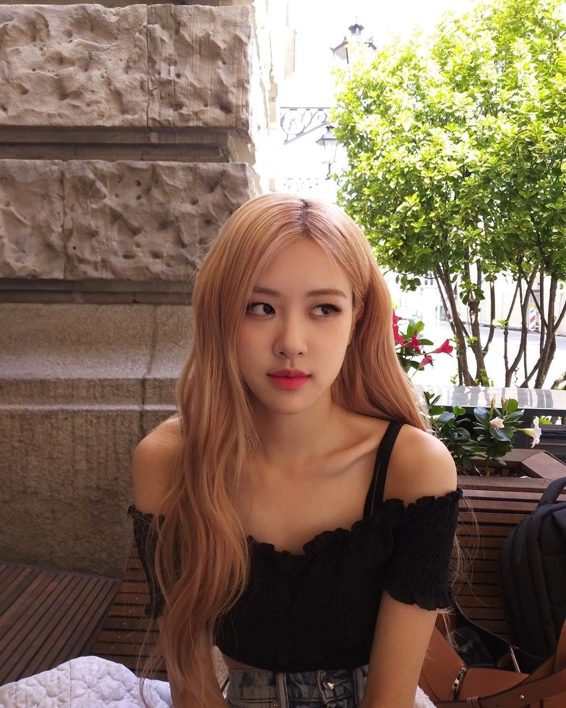
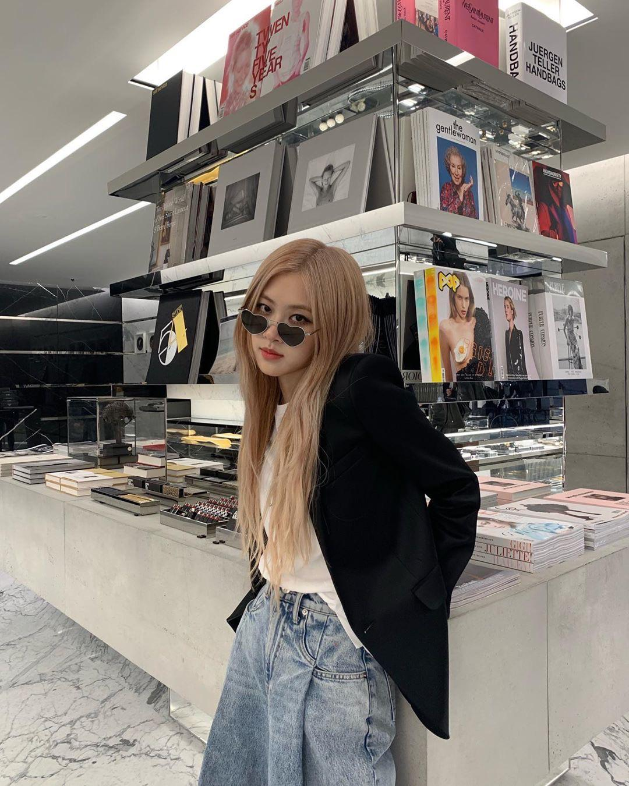
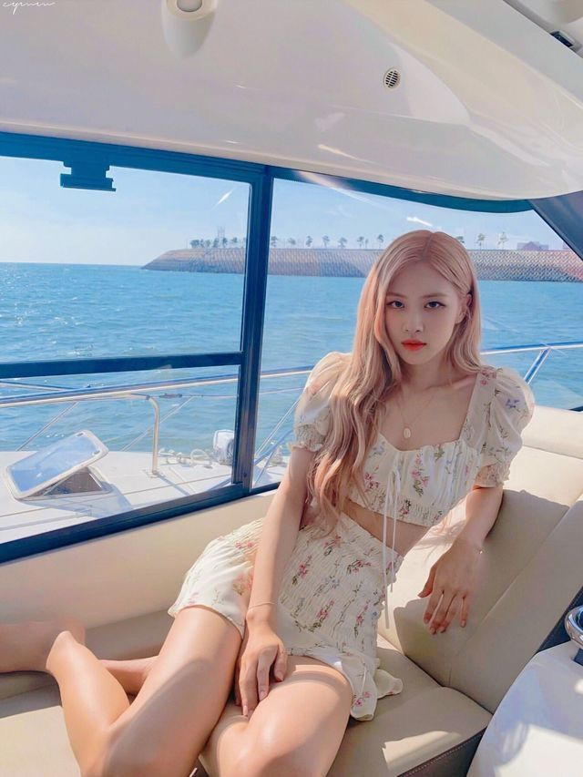
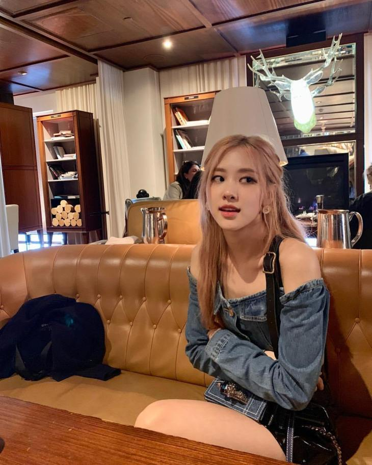
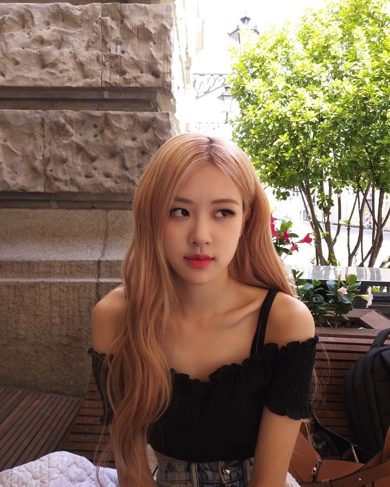
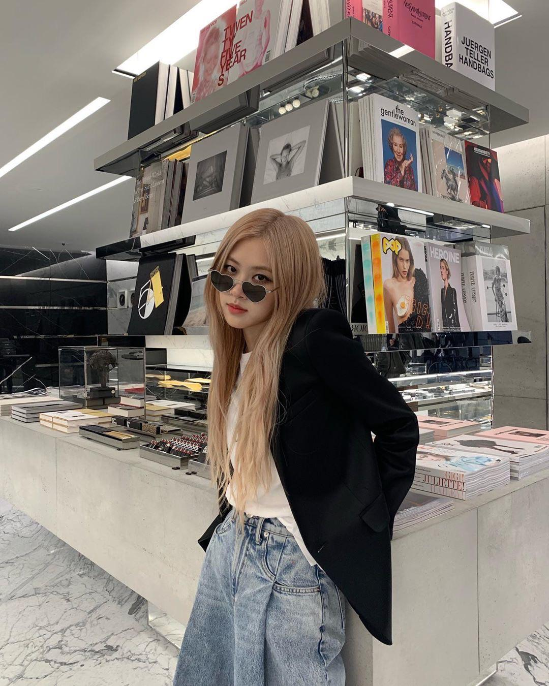
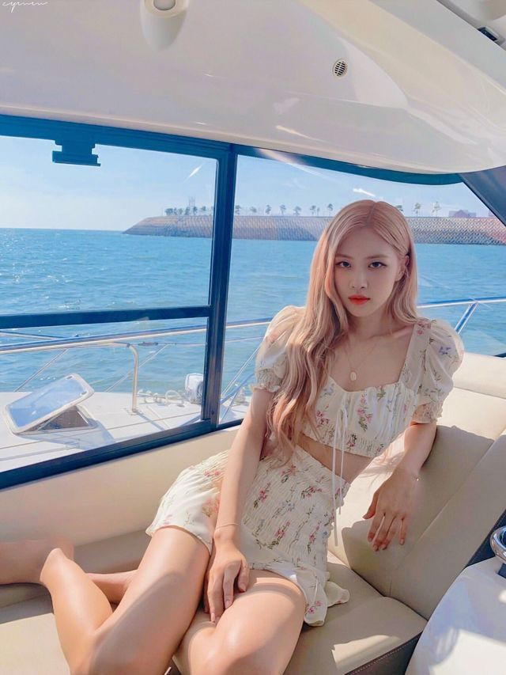
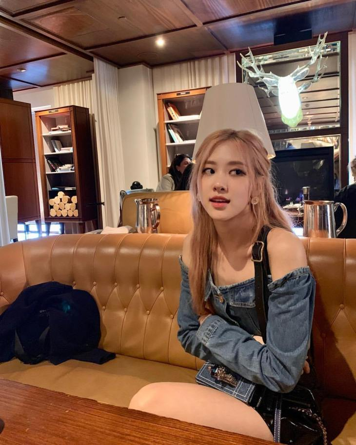

Stage Name: Rosé (로제)
Birth Name: Park Chae Young (박채영)
English Name: Roseanne Park
Nicknames: Rose, Rosie, “Pasta”
Position: Main Vocalist, Lead Dancer
Birthday: February 11, 1997
Zodiac Sign: Aquarius
Birthplace: Auckland, New Zealand
Height: 168.7 cm
Weight: 44 kg (97 lbs)
Blood Type: B
MBTI Type: ENFP
Rosé Facts
She is Korean, but she was born in Auckland, New Zealand and raised in Melbourne, Box Hill (Australia), where she attended Canterbury Girls Secondary College.
She has an older sister, named Alice.
She moved to Korea back in 2012.
Rosé was the last member to be revealed.
Rosé placed first in YG auditions in Australia.
She can speak Korean, English, Japanese.
She trained for 4 years 2 months (2012 May).
She can play the piano and the guitar.
Her hobbies are playing guitar, drawing, and riding the bicycle.
Pre-debut, Rosé used to be a cheerleader in Australia.
Rosé’s ideal type: Someone nice and genuine, with a good/ unique voice. She said there are many sunbaenims with great voices, but among them, Big Bang stand out.